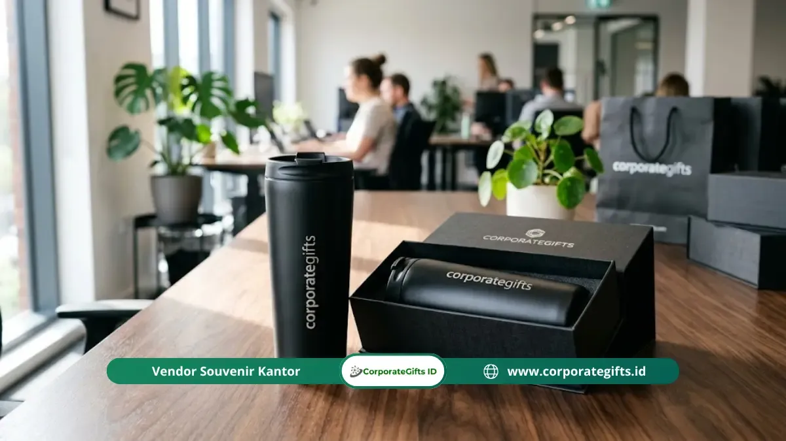

Corporate Gifts ID - Isi souvenir perpisahan kantor massal yang paling direkomendasikan adalah produk fungsional dan tahan lama seperti tumbler custom, tote bag, notebook, dan goodie bag tematik yang dapat dicetak logo perusahaan. Produk jenis ini dipilih karena tetap dipakai penerima dalam jangka panjang, harganya makin efisien untuk pembelian dalam jumlah besar, dan mudah diproduksi secara massal tanpa mengorbankan kualitas.
Momen perpisahan karyawan dalam skala besar, baik karena mutasi divisi, restrukturisasi akhir tahun, maupun purnatugas bersama, memerlukan persiapan cinderamata yang adil, seragam, dan berkesan. Menentukan isi suvenir yang tepat membantu divisi HR dan panitia acara menjaga kehangatan relasi profesional antar-karyawan.
Poin Kunci Pengadaan Souvenir Perpisahan Massal:
- Prioritas Fungsional: Pilih barang harian seperti tumbler stainless SUS 304, notebook hardcover, atau tote bag kanvas berdaya tahan lama.
- Efisiensi Skala Besar: Maksimalkan diskon kuantitas (bulk order) dengan memesan item seragam ber-branding logo rapi.
- Pengemasan Estetik: Gunakan packaging menarik seperti goodie bag spunbond tebal atau gift box bermagnet untuk menaikkan nilai hadiah.
- Manajemen Waktu: Lakukan konfirmasi desain mockup minimal 3 pekan sebelum acara agar proses produksi dan QC berjalan tanpa kendala.
Apa Itu Isi Souvenir Perpisahan Kantor Massal dan Mengapa Penting?
Isi souvenir perpisahan kantor massal adalah rangkaian produk cinderamata yang diproduksi dalam kuantitas puluhan hingga ratusan unit untuk dibagikan kepada karyawan, rekan tim, atau mitra kerja saat acara pelepasan bersama (farewell gathering).
Keberadaannya sangat penting karena menjadi simbol penghargaan institusi atas dedikasi kerja yang telah diberikan. Berbeda dengan hadiah personal yang sifatnya individual, suvenir massal menuntut keseimbangan antara anggaran perusahaan yang efisien dan nilai guna yang nyata bagi setiap penerima.

Kombinasi tumbler custom, notebook kulit sintetis, dan pulpen eksklusif untuk acara perpisahan kantor berskala besar.
Pilihan Isi Souvenir Perpisahan Kantor Massal yang Paling Efektif
Berikut beberapa kategori produk cinderamata yang terbukti paling diminati dan memiliki tingkat kepuasan penerima tertinggi:
- Tumbler Stainless Steel Custom: Termos vakum SUS 304 yang menjaga suhu minuman dingin dan panas seharian. Sangat cocok digrafir nama perusahaan dan quotes apresiasi.
- Tote Bag Kanvas Premium: Tas serbaguna kuat yang dapat dipakai untuk belanja belanja ramah lingkungan maupun membawa dokumen kerja.
- Buku Agenda Hardcover / Kulit PU: Buku catatan kerja berkualitas tinggi untuk menunjang produktivitas harian di tempat kerja baru.
- Powerbank & Flashdisk Custom: Aksesori teknologi penunjang mobilitas kerja yang selalu dibutuhkan oleh para profesional modern.
- Set Alat Makan (Cutlery Set): Sendok, garpu, dan sedotan ramah lingkungan dalam pouch praktis untuk mendukung gaya hidup sehat.
Cara Memilih Isi Souvenir Perpisahan Kantor Massal Sesuai Anggaran
Pengadaan suvenir massal harus direncanakan secara matang berdasarkan pagu anggaran per penerima (budget per pax). Berikut matriks estimasi alokasi biaya pengadaan:
| Tier Anggaran | Estimasi Biaya / Unit | Rekomendasi Kombinasi Produk | Pilihan Kemasan |
|---|---|---|---|
| Ekonomis (Massal 200+ Unit) | Rp25.000 - Rp45.000 | Tote bag spunbond + notebook spiral + pulpen metal promosi | Pouch spunbond berlogo |
| Standar (Mid-Tier) | Rp50.000 - Rp95.000 | Tumbler stainless 500ml + blocknote hardcover ber-UV print | Goodie bag kanvas / kraft box |
| Premium Eksekutif | Rp100.000 - Rp250.000+ | Smart tumbler LED + agenda kulit deboss + powerbank wireless | Premium hardbox magnetik pita |
Faktor yang Memengaruhi Pilihan Isi Souvenir Perpisahan Kantor Massal
Sebelum menetapkan jenis barang yang akan dipesan, perhatikan 4 faktor penentu berikut:
- Profil dan Demografi Karyawan: Pastikan barang yang dipilih relevan dengan rentang usia, bidang pekerjaan, dan gaya hidup mayoritas rekan kerja.
- Skala Jumlah Penerima: Semakin besar kuantitas pesanan, semakin banyak opsi harga grosir yang bisa dinegosiasikan dengan vendor resmi.
- Durasi dan Deadline Pengadaan: Pilih produk dengan ketersediaan stok bahan yang melimpah jika waktu persiapan Anda kurang dari 2 minggu.
- Kemudahan Distribusi: Pastikan dimensi dan bobot paket tidak merepotkan saat dibagikan secara massal di akhir sesi acara.
Kesalahan Umum dalam Memilih Isi Souvenir Perpisahan Kantor Massal
Hindari beberapa kekeliruan fatal yang sering terjadi dalam proyek pengadaan suvenir kantor:
- Memilih Produk yang Hanya Menjadi Pajangan: Barang non-fungsional cenderung berakhir di laci dan cepat terlupakan.
- Mengabaikan Kualitas demi Harga Paling Murah: Produk bermutu rendah yang cepat rusak justru merusak reputasi dan citra institusi.
- Pemesanan Terlalu Mepet (Dead-Heat): Keterbatasan waktu membuat proses quality control (QC) tidak maksimal dan risiko keterlambatan pengiriman meningkat.
Cara Memesan Isi Souvenir Perpisahan Kantor Massal Secara Efisien
Untuk memastikan pengadaan berjalan lancar, ikuti tahapan pemesanan profesional bersama vendor terpercaya:
- Tentukan Jumlah Pasti dan Pagu Anggaran: Siapkan rekapitulasi data calon penerima suvenir perpisahan.
- Konsultasikan Kurasi Produk: Diskusikan kombinasi paket terbaik bersama tim konsultan B2B CorporateGifts.ID.
- Review Digital Mockup: Periksa tata letak logo, ukuran font, dan kecocokan warna visual sebelum menyetujui sampel pra-produksi.
- Produksi dan Quality Control (QC): Pantau tahapan produksi massal hingga proses pengemasan rapi siap kirim.
Kesimpulan dan Konsultasi Pengadaan
Memilih isi souvenir perpisahan kantor massal yang fungsional dan berkesan adalah bentuk apresiasi bermakna atas kontribusi setiap rekan kerja. Melalui perencanaan anggaran yang tepat, kurasi produk bernilai guna tinggi, dan sentuhan kemasan rapi, acara perpisahan kantor Anda akan meninggalkan kesan mendalam yang tak terlupakan.
Konsultasikan kebutuhan suvenir perpisahan massal perusahaan Anda bersama tim spesialis CorporateGifts.ID. Dapatkan penawaran harga resmi B2B dan visual mockup gratis melalui formulir permintaan penawaran harga hari ini juga.